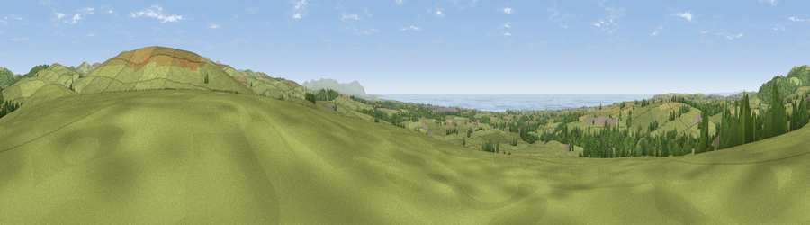

Viewpoint near Haile
#3660 in England · top 32% of its area beats it · near Haile · path 114 mWhere it is
The exact computed spot (NY 04212 08488). Click the marker for map links.
Public access: the nearest public right of way is about 114 m away — the final stretch may cross private land. Computed from Natural England's CRoW access layer and OpenStreetMap rights of way — not the legal definitive map. Always verify locally.
The view, rendered

A 360° render of this exact spot computed from the terrain model, tree cover and land cover — summer colours, afternoon light, calibrated against photographs of famous viewpoints. Real trees, hedges and buildings will differ in detail.
The panorama
Grey silhouette: terrain skyline in each direction (720 bearings, Earth curvature and refraction included). Dashed green: skyline with trees (+15 m) and buildings (+8 m) as obstacles. Blue strip: how far the ground is visible on each bearing.
Where the view opens
Wedge length = distance to the farthest visible ground on that bearing (vegetation-aware). Rings at 10, 25 and 50 km.
What fills the view
67% grassland · 14% woodland · 11% water · 6% cropland · 2% built-up
Angular shares of the visible panorama (visual magnitude), not map area. Landscape diversity 0.45 (0–1 Shannon).
Key numbers
More beautiful places nearby
The staircase of upgrades: each row has a higher view potential than everything closer. Driving times are estimates from straight-line distance, calibrated against real road routing — check an actual route before setting out.
| Place | Direction | Drive | Score |
|---|---|---|---|
| Cold Fell | ENE · 2 km | ~4 min | 79.9 |
| Viewpoint near Cleator | NNW · 4 km | ~9 min | 80.4 |
| Ponsonby Fell | ESE · 4 km | ~10 min | 81.9 |
| Dent [Long Barrow] | N · 4 km | ~10 min | 84.5 |
| Viewpoint near Cleator | N · 5 km | ~11 min | 86.1 |
| Crag Fell | NE · 8 km | ~16 min | 89.1 |
| Ullock Pike | NE · 29 km | ~45 min | 89.4 |
| Long Side | NE · 29 km | ~45 min | 89.5 |
54.46270, -3.47925 · source: screening · position refined by local search. Computed location — check access rights before visiting.